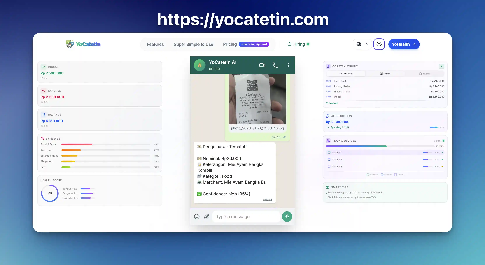
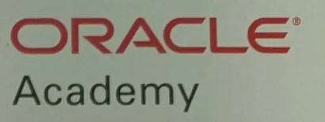

AI · Personal finance
YoCatetin
Founder-led platform that turns everyday spending into structured records through familiar chat workflows.
Product · Founder-led
Open live product ↗Software Engineer Balikpapan, Indonesia
I build products people use and systems teams can rely on.
From web and mobile products to legacy modernization and cloud operations, I work across the stack with teams in Indonesia and abroad.
Open to engineering and technical leadership opportunities
Selected work

AI · Personal finance
Founder-led platform that turns everyday spending into structured records through familiar chat workflows.
Product · Founder-led
Open live product ↗AI · Creator tools
AI-assisted video clipping for finding strong moments and creating short-form content.
Active product · Founder-led
Open live product ↗Maritime · Operations
Digital tools for port and fleet workflows, including operational monitoring and integrations.
Web & Mobile platform · Maritime operations
A few highlights
Also delivered maritime integrations and helped bring a 20-year-old desktop system to the web, translating 200+ designs into working features.
Capabilities
I connect product thinking, engineering, and operations to make software useful over time.
Web and mobile products shaped around practical workflows.
In practice · YoCatetinTurning established systems into maintainable web platforms.
In practice · Japan enterprise platformDeployment and operations behind reliable software.
Focus · Production operationsAI features built into useful product workflows.
In practice · YoClipperTools & platforms Node.js, TypeScript, PHP, Rust, Vue, Next.js, Flutter, PostgreSQL, MySQL, Oracle, AWS, Vultr and GCP.
Education & credentials
Politeknik Negeri Samarinda
International Centre for English Excellence (ICEE)
Continued learning
Courses, programs, and skills achievements from across the stack.
Course certificates
Course completions

Database Foundations course
Course completions
English program completion
Achievements & badges
Notes from the work
Technical notes, engineering reflections, and practical lessons from building software.
How a Cloudflare Origin CA and Nginx solved an SSL error during a move from Vercel to Google Cloud.
A practical guide to Zsh, Oh My Zsh, and Powerlevel10k for a more useful terminal setup.
A breakdown of the hardware, software, and consumption layers behind AI infrastructure at scale.